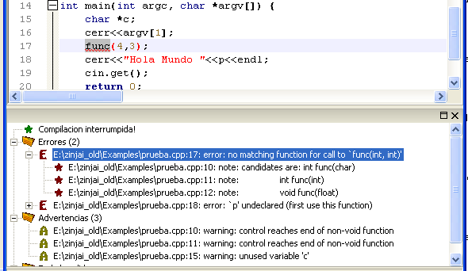

Análisis de la salida del compilador
Para facilitar su lectura, la salida arrojada por el compilador es analizada y reorganizada en ítems y subítems dentro de las ramas Errores y Advertencias del árbol de Resultados de la compilacion. Por ejemplo:
- si el compilador no sabe a cual de las distintas sobrecargas de una función debe llamar éste error se presenta en un ítem y las declaraciones de las distintas sobrecargas (es decir las posibles opciones candidatas que el compilador encuentra) en subítems del mismo;
- las notas adicionales que complementan un mensaje de error (como por ejemplo la que indica que un identificador no declarado sólamente se informará la primera vez que se encuentre) se organizan también como subítems del ítem del error propiamente dicho (en el ejemplo, que el identificador no estaba decalarado);
- si el compilador avisa mediante dos líneas de error que un llamada a un método no se puede realizar, indicando la posición del archivo donde se declaró el método, y luego un mensaje indicando la posición del archivo en donde se intentó utilzarlo incorrectamente, se incluirá en el árbol un solo error indicando el mensaje del primero y la posición del segundo.
- si el compilador señala errores que involucren funciones o clases genéricas, ZinjaI reemplaza los argumentos formales de dichas plantillas con los argumentos actuales que el compilador informó en el punto donde encontró el error. Es decir, muestra la llamada explicitamente especializada en el mensaje de error, en lugar de mostrar la llamada genérica primero, y los argumentos con los cuales se especializa luego. En este proceso, además, elimina del mensaje algunos argumentos propios de las bibiliotecas estándar que denotan detalles de implemantación con los que no debería lidiar el usuario de las mismas.
- algunos errores específicos son reconocidos por ZinjaI, y se sugieren o directamente aplican correcciones específicas (ejemplo 1: si el binario existe pero no tiene permisos de ejecución ZinjaI intenta aplicarselos, y en caso de fallar muestra un mensaje específico mencionando las causas más comunes para ese problema y posibles soluciones; otro 2: si el enlazado falla por la falta de argumentos de compilación adecuados para el uso de bibliotecas en programas simples, ZinjaI intenta identificar una plantilla adecuada para dicha biblioteca y ofrece aplicar sus parámetros para el programa actual).

Finalmente, al seleccionar un error para ir a su posición en el archivo (doble click sobre el mismo), si el mensaje hace referencia a una palabra dentro de la línea que lo generó (por ejemplo el nombre de un identificador no declarado, o una función cuyos parámetros no son los correctos), se selecciona esta palabra en el editor. Para identificar estos casos, se analizan las coincidencias de la última expresiñon presentada en el mensaje entre comillas simples (en algunos casos GCC utiliza el caracter correspondiente a la comilla simple, mientras que en otros utiliza los acentos o una combinación de ambas). Si esta expresion aparece una sola vez en la linea que generó el error, la expresión será subrayada con rojo dentro de la misma indicando que es la causante del error. Si aparace más de una vez será subrayado con otro colo indicando que cada ocurrencia podría ser la causante del error o no.